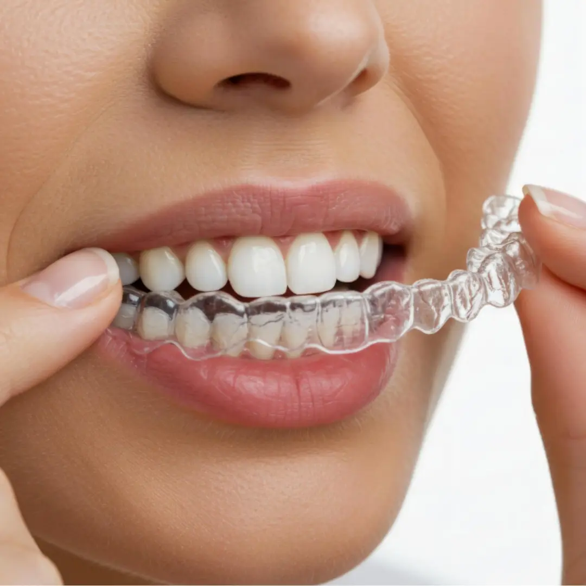

Choosing between Invisalign (clear aligners) and traditional braces is one of the most common, yet crucial, questions patients ask before embarking on their orthodontic journey. A beautiful, straight smile is universally desired, but the path to achieving it has evolved dramatically. With growing awareness and technological advancements, especially in rapidly modernizing cities like Hyderabad, more people are actively seeking comfortable, highly aesthetic, and profoundly effective ways to straighten their teeth.
Historically, the only reliable route to a perfectly aligned smile involved years of metal brackets and tight wires. Today, the landscape is entirely different. Modern dentistry offers options that fit seamlessly into busy, professional lifestyles without compromising on results. However, this abundance of choice can also lead to confusion. Which method is faster? Which is less painful? What fits best into a hectic daily routine? In this comprehensive, deep-dive guide for 2026, we will thoroughly explore every facet of both Invisalign and traditional braces to help you make the most informed decision possible for your oral health and confidence.
What is Invisalign (Clear Aligners)?
Invisalign represents a monumental leap forward in modern orthodontic treatment. At its core, it is a system that uses a series of custom-made, clear, removable plastic trays—known as aligners—to apply precise, controlled forces to gradually move teeth into their ideal alignment. Gone are the days when achieving a straight smile required a mouth full of highly visible metal hardware.
Unlike traditional braces, the Invisalign system completely eliminates the need for metal wires, heavy brackets, or elastic bands. The defining characteristic of Invisalign is its almost entirely invisible appearance. When worn, the aligners blend naturally with the teeth, making it incredibly difficult for observers to notice that you are undergoing orthodontic treatment. This stealthy approach has made clear aligners the treatment of choice for millions of adults and image-conscious teenagers worldwide.
How the Invisalign Process Works
The magic of Invisalign lies in its sophisticated integration of digital technology. The process begins with a highly accurate, 3D digital scan of your teeth, eliminating the need for uncomfortable, gooey physical impressions of the past. Using advanced software, your orthodontist creates a complete digital roadmap of your treatment—from the current position of your teeth to the final, perfected smile.
Based on this 3D treatment plan, a customized series of aligners is precisely manufactured using 3D printing technology. Each aligner is slightly different from the previous one. As you wear an aligner, it gently pushes specific teeth into place. You will typically switch to a new set of aligners every one to two weeks. For the treatment to be effective, these aligners must be worn strictly for 20 to 22 hours every single day, removing them only for eating, drinking anything other than water, brushing, and flossing.
Who Should Choose Invisalign?
While Invisalign is incredibly versatile, it truly shines in specific scenarios. It is the ideal solution for patients dealing with mild to moderate misalignment issues. If you have noticeable gaps between your teeth, slight to moderate crowding, or minor bite issues, Invisalign can often resolve these efficiently. Furthermore, it is the premier choice for adults and working professionals whose careers or social lives demand a discreet treatment option. If the thought of wearing visible metal braces makes you hesitant to seek treatment, Invisalign is the perfect alternative.
Key Benefits and Limitations of Invisalign
The advantages of Invisalign extend far beyond aesthetics. Because the aligners are entirely removable, you have the unparalleled freedom to eat whatever you desire without fear of breaking a bracket. This removability also makes maintaining excellent oral hygiene effortless; you can brush and floss normally without navigating around wires. Additionally, the smooth medical-grade plastic drastically reduces the likelihood of mouth abrasions and sores commonly associated with metal braces.
However, the system is not without its limitations. The greatest strength of Invisalign—its removability—is also its potential weakness. The treatment absolutely requires strict patient discipline. If you fail to wear the aligners for the required 20–22 hours a day, your teeth will simply not move as planned, drastically extending your treatment timeline. Furthermore, while the technology is constantly improving, Invisalign may still not be the optimal choice for highly complex orthodontic cases involving severe vertical discrepancies or extensive jaw realignments, which may require the constant, robust force that only fixed braces can provide.
🦷 What are Traditional Braces?

Traditional braces are the foundational, time-tested pillar of orthodontic treatment. For decades, they have been the most effective and reliable method used by orthodontists to correct a vast array of dental alignment and complex bite issues. While they may lack the 'invisible' appeal of clear aligners, their biomechanical efficiency and ability to handle extreme corrections remain largely unmatched.
The architecture of traditional braces consists of several key components working in unison. Small brackets are firmly bonded to the front surface of each individual tooth using a specialized dental adhesive. A highly engineered archwire is then threaded through these brackets. Finally, tiny elastic bands (ligatures) are used to secure the wire to the brackets. By periodically adjusting or changing the wire, the orthodontist applies continuous, targeted pressure that slowly shifts the teeth and underlying bone into the correct anatomical position over time.
Types of Modern Braces
When people hear "braces," they often picture a mouth full of highly visible metal. While this remains common, modern orthodontics offers several variations designed to improve aesthetics and patient comfort.
- 🔹 Metal Braces: These are the strongest, most durable, and often the most cost-effective type of braces. Made from high-grade stainless steel, they are highly effective for even the most severe alignment issues. Modern metal brackets are significantly smaller and flatter than those used in previous decades.
- 🔹 Ceramic Braces: Designed for patients who need the mechanical advantage of braces but desire a more subtle look. The brackets are made from a clear or tooth-colored ceramic material that blends closely with the natural enamel, making them much less noticeable from a distance.
- 🔹 Lingual Braces: The ultimate hidden braces. These function identically to traditional metal braces, but the brackets and wires are custom-fitted to the back (lingual) side of the teeth. They are completely invisible from the outside, though they can be slightly more difficult to clean and may temporarily affect speech.
Who Should Choose Braces?
Traditional braces are the gold standard for complex, challenging orthodontic cases. They are best suited for patients presenting with severe misalignment, extreme crowding, dramatically rotated teeth, or significant bite problems such as deep overbites, underbites, or crossbites. Because they are fixed directly to the teeth, they are also an excellent choice for children, teenagers, or any patient who might struggle with the strict compliance required by removable aligner systems.
Benefits and Limitations of Braces
The primary benefit of traditional braces is their sheer power and precision. Because they remain fixed in place 24/7, they apply constant, uninterrupted force, leading to highly predictable and precise results regardless of the case's complexity. There are no "compliance issues"—the patient doesn't need to remember to put them in after every meal.
The limitations are primarily related to lifestyle and aesthetics. The visible appearance can be a deterrent for some adults. Furthermore, wearing braces requires modifying your diet; hard, crunchy, sticky, or chewy foods must be strictly avoided to prevent breaking brackets or snapping wires. Additionally, the hardware can cause slight initial discomfort, occasionally rubbing against the inner cheeks and lips until the mouth adapts.
⏳ Invisalign vs Braces: Timeline Comparison (2026)
The duration of orthodontic treatment is naturally a major concern for patients. While every individual case is unique, we can outline general expectations based on current 2026 clinical data.
Why Invisalign is Often Faster (in Mild to Moderate Cases): The speed of Invisalign is largely driven by its advanced digital planning software. By mapping out the entire treatment beforehand, teeth take the most direct, efficient path to their final destination. The force applied by the custom trays is continuous and highly controlled over a large surface area of the tooth. Furthermore, there are virtually no delays caused by emergency clinic visits for broken wires or debonded brackets.
Why Braces May Take Longer: Traditional braces require gradual, incremental physical adjustments made by the orthodontist at each visit. Highly complex root movements and bite corrections inherently take a significant amount of time to execute safely and stably. The treatment pace is somewhat reliant on how the teeth respond to the periodic tightening of the archwires.
⚖️ Invisalign vs Braces: Detailed Lifestyle Comparison
1. Aesthetics and Appearance
Invisalign is the undisputed winner here. The clear plastic is almost imperceptible. This makes it the premier choice for adults, business professionals, and students who are highly self-conscious about their appearance during treatment. Braces, even the ceramic options, are undeniably visible.
2. Comfort and Physical Experience
The smooth, custom-molded plastic of Invisalign aligners prevents the vast majority of soft tissue irritation. While there is a feeling of pressure when switching to a new tray, it is generally mild. Conversely, the metallic brackets and wire ends of traditional braces can occasionally cause small cuts or ulcers on the inner cheeks and lips, particularly during the first few weeks of adaptation.
3. Oral Hygiene and Maintenance
With Invisalign, you simply pop the trays out to brush and floss your teeth exactly as you always have. Maintaining impeccable oral hygiene is effortless. With braces, food particles easily become trapped around the brackets and under wires. Brushing takes significantly longer, and patients must use special tools like floss threaders or interdental brushes to thoroughly clean their teeth and prevent plaque buildup and decay.
4. Food Restrictions and Diet
Invisalign requires zero dietary changes. Because you remove the aligners before eating, you can comfortably enjoy popcorn, apples, nuts, and sticky candies. For patients with braces, hard, crunchy, or sticky foods are strictly off-limits, as they run a very high risk of snapping wires or popping brackets off the teeth, which delays treatment.
5. The Discipline Factor
This is where braces take the lead. Because they are glued to your teeth, they are working 100% of the time with zero effort on your part. Invisalign demands immense personal discipline. You must consciously remember to wear the trays for 22 hours a day, effectively limiting eating and drinking time to just 2 hours daily. If you are forgetful or prone to losing things, clear aligners may prove frustrating.
📍 The Local Perspective: Orthodontics in Hyderabad
In rapidly developing, tech-forward metropolitan hubs like Hyderabad, the demand for clear aligners has skyrocketed over the past few years. The city's massive demographic of IT professionals, corporate leaders, and image-conscious young adults heavily favors the invisible, convenient nature of Invisalign. Leading dental clinics across the city, including Vijaya Dental, have rapidly integrated advanced digital scanners and 3D orthodontic planning to meet this surging demand.
However, despite the clear aligner boom, traditional braces remain incredibly popular and widely utilized throughout Hyderabad. They are often viewed as a more economical, highly reliable option, particularly for children and teenagers whose parents prefer a treatment method that does not rely entirely on the child's compliance. Ultimately, the right choice heavily depends on your specific clinical case, lifestyle demands, and a thorough consultation with an experienced orthodontist.
🔄 Results, Long-Term Stability, and Aftercare
Whether you choose the high-tech path of Invisalign or the robust mechanics of traditional braces, both treatments are capable of yielding absolutely stunning, life-changing results. A beautiful, functional smile is the ultimate goal, and both methods successfully reach that destination.
However, the journey does not end when the braces come off or the final aligner is discarded. Retention is critical. Teeth have a natural "memory" and a tendency to slowly shift back toward their original, misaligned positions over time. Without strict adherence to wearing retainers—typically worn full-time initially and then nightly for life—your investment in orthodontic treatment can be compromised. Excellent daily oral hygiene and regular 6-month dental checkups are also non-negotiable for maintaining the health of your newly perfected smile.
⚠️ Common Orthodontic Mistakes to Avoid
- Failing to wear Invisalign trays for the required 22 hours per day.
- Skipping scheduled monthly tightening appointments for braces.
- Neglecting oral hygiene, leading to permanent white spot lesions around brackets.
- Eating hard or sticky foods with braces, causing frequent breakages.
- Failing to wear your retainers faithfully after the primary treatment concludes.
🔮 The Future of Orthodontics (2026 Trends)
As we navigate through 2026, the field of orthodontics is experiencing a technological renaissance. The integration of Artificial Intelligence (AI) into treatment planning software allows orthodontists to predict tooth movement with astonishing millimeter precision, resulting in shorter treatment times and fewer mid-course corrections. Furthermore, the materials used to manufacture clear aligners are becoming incredibly sophisticated—offering greater flexibility, enhanced stain resistance, and an even more invisible profile.
❓ Frequently Asked Questions (FAQs)
- 1. Is Invisalign objectively better than traditional braces?
- There is no universal "better." It heavily depends on your specific clinical presentation. Invisalign is undoubtedly better for aesthetics, comfort, and ease of cleaning. Braces remain superior for highly complex, severe skeletal or alignment issues.
- 2. Which treatment generally works faster?
- For mild to moderate crowding or spacing issues, Invisalign can often complete the job noticeably faster due to its continuous, digitally optimized application of force. For complex movements, braces may be more efficient.
- 3. Do clear aligners hurt as much as braces?
- Patients typically experience mild pressure and tightness for the first 24-48 hours when switching to a new tray. However, this discomfort is generally reported to be significantly less intense and shorter-lived than the soreness experienced after braces are tightened.
- 4. Can I switch from traditional braces to Invisalign halfway through?
- Yes, "hybrid" treatments are becoming more common. If a patient experiences severe lifestyle disruptions from braces, an orthodontist may transition them to aligners to finish the finer detailing, though this depends entirely on the case.
- 5. Are the results from orthodontic treatment truly permanent?
- Yes, but only if you diligently wear your prescribed retainers. Without retention, natural physiological forces will inevitably cause the teeth to slowly relapse over time.
Ready to Prioritize Your Health?
Don't leave your health to chance. Book your appointment at Vijaya Dental today.
?? Book Appointment NowOr call us directly: 91776 17437